Using competitive positioning strategy to identify a market for a new lifestyle gardening app.
Captain Plants
A Marketing and Product Design Case Study
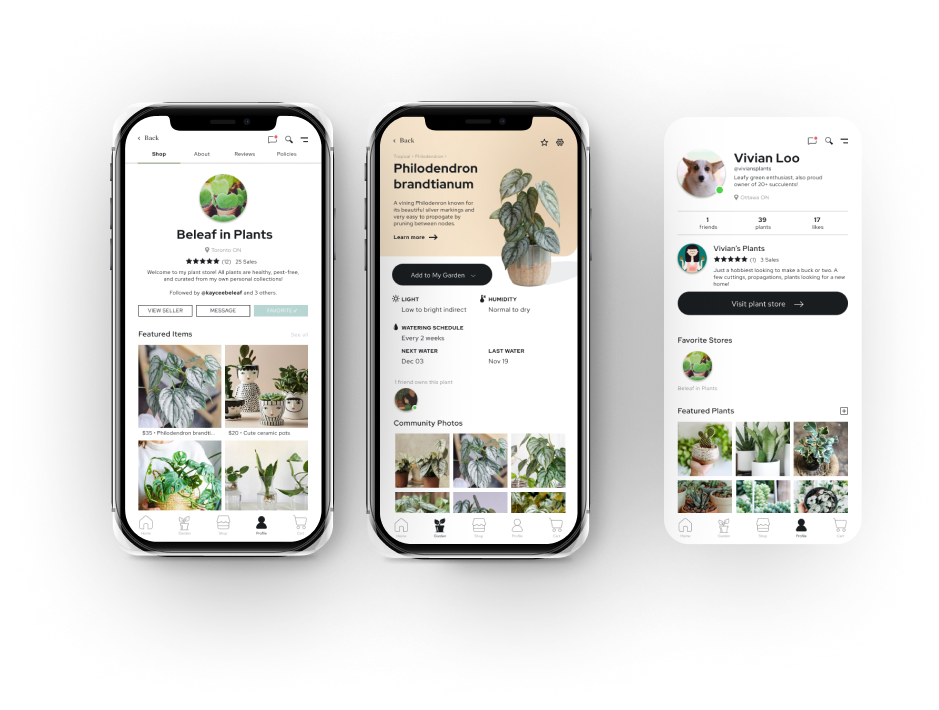
In the modern hectic world, work is always running on the back of our minds hindering our quality and leisure time. With increasing demands to work longer and harder, it is a daunting challenge to maintain a healthy work-life balance.
Captain Plants is an all-in-one social hub and marketplace for plant lovers and enthusiasts. It is a lifestyle app connecting communities who seek healthy, mindful companionship with nature.
Lifestyle apps have proved effective in helping people micro-manage their lives and mental wellbeing while allowing them to stay the course of their busy on-the-go schedule.
YEAR
Sept - Dec 2019 (4 months)
ROLE
Market/user research, and created the wireframes and assets
TEAM
Vivian Liu, Keren He, Ruiqi Liang, Tai May Wee, Raya Porter
Part 01: Market Analysis
“Growing” Interest in Indoor Gardening
Lifestyle Apps
SWOT Analysis
Competitive Analysis
Part 02: Target Market
Target Market
User Persona
Part 03: Marketing Strategy
Marketing Mix
Objectives
Part 04: Design
Branding
User Flow
Design Outcomes
Reflections
Market Analysis.
/01
“Growing” Interest in Indoor Gardening
With its recent rapid rise in popularity, indoor gardening offers the perfect solution for young adults looking to cultivate a healthy connection to nature. With an increase in remote jobs, people are finding less reason to go outside. The more we are at their desk, glued to their screens, the disconnect between us and nature grows wider.
Artworks, icons, wireframes created by me.
01
Responsibility for a life outside ourselves
Of the friends and classmates we interviewed for this project, over 80% have bought or currently owns a houseplant. When asked why they care for houseplants, many believe in taking care of a plant they indirectly take care of their own health - whether it be mentally de-stressing to watch something grow under your care, or physically as their plants filter and clean the air they breathe.
In addition, many of these people are in situations where they cannot get a dog or a cat, so they turn to plants as the alternative. Many plant hobbyists consider plants their “babies” and will put in a great deal of time, money, and care to keep them healthy.
02
Mental health benefits of caring for a plant
According to a study from the American Psychological Association, younger people are increasingly suffering from poor stress management, more so than the older generations. We are naturally drawn to nature and things that are green. Perhaps that is why plant care is such a healthy stress relief option with therapeutic benefits like improving mood and developing a sense of responsibility, pride, and joy when our houseplants are thriving.
One of the more popular residential buildings in the university area rents two-bedroom apartments with no windows in one of the bedrooms. Converting dens into bedrooms and basements into rentals is becoming increasingly common as demand for affordable rentals rises in highly populated regions like Vancouver and Toronto. In a city that's constantly moving and changing, a houseplant is a simple solution to take nature with us into our living space.
03
Social media trends and influences
Plant owners are not only fond of their plant “babies” but like any proud parent many also love to share pictures of their progress on social media. Instagram currently hosts the largest community of plant lovers with millions of posts that include plant related hashtags like:
#plants
>10M posts
#plantsofinstagram
>10M posts
#plantlife
>2M posts
#plantsmakepeoplehappy
1.5M posts
#houseplants
1M posts
#plantlove
1M posts
Houseplant owners from coast-to-coast have also taken to Facebook to buy, sell, and trade plants or cuttings with almost 10,000 members in big groups like Canada Plant Swap and Sales, Canada Rare Exotic Plant Swap, and Ontario Plant Swap.
/02
Lifestyle Apps
We determined from our research a strong potential for growth in the next few years for lifestyle apps on both the iOS and Android markets. From projected increases in market size, revenue, and worldwide downloads, we believe there is a significant and profitable industry that is positively trending for our app to launch in.
4
th
most popular category in the Apple App Store in 2019
$58 billion
industry of which lifestyle apps account for 8.33% in 2018
6th
in user spending on iOS
$23 billion
in revenue in 2018
4th
in user spending on Android
$12 billion
in revenue in 2018
7th
6th
in worldwide downloads from 2017 to 2018
/03
SWOT Analysis
The most important and influential factor to consider in this industry are the competitors. There exists several gardening apps in the market and many share similar functions to our proposal. It will be difficult to pull customers away from these existing competitors, so we will need to find our own unique target market and unique value proposition if we want to succeed.
A free to download, free to use business model gives us an edge in this market dominated by apps that are either pay-to-use, subscription-based, or that have key features locked behind a paywall. Instead of charging users to use our app, we chose to offer most of our key features for free and focus on providing users a platform where they can grow their own communities or businesses, while making money off premium features like storefront features and partnership opportunities.
Strengths
- Price: free to download.
- Product: offering various different functions in one app.
- Customers: low switching cost.
Weakness
- Product: some functions are already present in competitors.
- Customers: high risk of overlapping target market, important to differentiate from other competitors.
Opportunities
- Trending houseplant culture creates a strong potential opportunity for our app.
- More users are turning to mobile apps to manage daily tasks.
- High demand for innovative app products.
Threats
- Over-saturation of mobile apps in the market, difficult to reach customers with a new app.
/04
Competitive Analysis
Looking through the Apple App Store and Google Play Store, the top app recommendations with similar functions to our proposal includes “Happy Plant”, “Plantnet”, and “Picture This”. To differentiate our product, we wanted to emphasize things that our competitors do not have, but also include features that all plant apps have as our sub-features to ensure a well-rounded experience:
Main Features
- Sharing pictures of our plants
- Marketplace for selling, trading, buying plants
- Social aspect - making friends
- Reminders to take care of yourself
Sub-Features
- Daily notifications for watering, fertilizing, etc.
- Plant identification service
- Plant care tips
Positional Mapping
Following this, we translated our competitive analysis into a simple positional map to find opportunities in the market where we can target users for our plant app. We chose to compare their consumers perception of price and degree of interaction, since we wanted to create a social app for young adults who own houseplants.
As demonstrated below, most competitor apps are either fully automated, or charges a fee to unlock key features like plant identification and care tips. This leaves an opportunity for us to target users who prefer free features and a balanced mix of interaction and automation up to fully interactive.
We could’ve further improved our positioning map by highlighting the size and influence of each competitor. We can use larger circles to illustrate the sizes of their respective userbases or ratings and even include colour to visualize the degree of influence they have on the market. For example, an established app like Happy Plant (8) is much larger than a new app like NatureGate (2), and thus will have more impact on the market. This would mean even less opportunity in the bottom two quadrants housing the fully automated apps than this graph indicates, and perhaps we could consider focusing less on our automated features like watering notifications and more on the social interaction aspect of friends and marketplaces.
Target Market.
/01
Target Market
Health-conscious young adults with interest in houseplant care
Establishing a user base and marketing off the subsequent network effect is one of the key strategies for our campaign. From previous research, we chose to target health-conscious young adults showing growing interest in gardening.
- A differentiated userbase who are just starting to explore the market and thus more likely to adopt our new app compared to those who already have high switching costs on other platforms.
- Busy schedules lead to higher dependence on “smart gardening” apps to help them micro-manage their plant care (Passport, 2019).
Importance of physical and mental health
According to a study published in the International Journal of Environmental Research and Public Health, green environments have proven to put people at ease, lower stress levels, and boost the immune system (Goyanes, 2019).In a study conducted by the OECD Better Life Index, Canada is rated 9.5/10 in terms of overall population health and USA is rated 8.6/10. In addition, mental health at work is becoming an increasingly popular topic in countries like USA with the introduction of programs offering employees access to key wellness and mental health services. Overall, people are becoming more aware of the importance of mental health and mindfulness in a stressful modern society.
Access to disposable income
Canadians reported in 2019, housing-related costs including rent, utilities, and internet accounted for approx. 22% of their gross income, compared to the worldwide average of 20% (OECD, 2019). Major urban cities like Toronto and Vancouver face shortages in affordable housing leading to an increase in rental units. Many people depend on low-cost rental housings to keep a roof over their heads.
In Canada, the average gross disposable income is US$30,854, and US$51,147 in USA. Higher disposable income means more money that can be allocated to goods and services.
Maintaining a healthy work-life balance
Balancing work and life is an important topic for all individuals. While supportive working environments can help, the demand for longer hours can lead to increase stress, and a decline in physical health if not properly addressed. Canada and USA ranks 30th and 29th out of 41 countries in terms of average time devoted by individuals every day to leisure and personal care.
Staying connected almost feels second nature
The internet is a major part of our daily lives, especially in young adults. In both Canada and USA, over 90% of the population are subscribed to an internet provider and over 70% use their smartphone to connect online (Statista, 2019).
So what does this mean for our target market?
We initially wanted to connect people together who share mutual interests in plant care and offer a platform to help them cultivate their hobby amidst a hectic environment. While this still stands as one of our primary goals, we should also consider the health benefits of plant care and encourage more users to incorporate plants into their lifestyle.
We need to focus less on the cost and more on creating value for young adults who may not have a high disposable income as there are already enough burdens with tuition and rising housing costs. In addition to the cost of buying plants, it would be impractical to also charge users to use our app and creates an unnecessary switching cost for people getting into houseplants.
Finally, we want our users to be proud of what they achieve through our friend system and public profile that showcases pictures of their plants.
/02
User Persona
To better understand our target market, we designed a hypothetical user persona based on information collected through our interviews and online research.
Many of the friends and classmates we interviewed are students, which creates some bias. However for this project and because we don’t have the time or resources, we decided to just work with the data we had. Furthermore, since the majority of our sample are also co-op students, they frequently travel to new cities for paid internships, live in rental units, and have more disposable income than regular students.
Name: Amanda Potter
Sex: Female
Age: 25
Income: Middle-class, approximately $25k disposable income
Education: Bachelor’s of Science in Nursing
Living in a single bedroom rental condo in downtown Toronto, single, no children. Cares for several houseplants for fun, not the best at it, has killed a few succulents by accident.
Psychographics
Activities
- Internet savvy, uses a smartphone, uses several social media apps
- Registered nurse, 12 hour shifts on-call
- Cares a lot about their career and making good relationships
Interests
- Health-conscious, willing to pay a premium for healthy options
- Values both physical and mental health
- Environmentally-friendly
Opinions
- Staying connected to nature to unwind and destress
- Time is money
Behaviour
- Saves money whenever possible and cuts on spending so that she can one day buy a house
- Young and trendy
- Keeps in touch with her friends and family. likes to spend money to go out or for food
How do we improve Amanda's experience with her plant care routine?
01
Sharing pictures of our plants
Social media has become such a big part of our daily lives, it’s hard to find someone who does not have at least one profile on popular apps like Facebook, Instagram, or Wechat. Amanda likes to take pictures of her plants and share them with her friends on Instagram. In particular, she feels very proud when her plants flower and will usually share those moments online. Her friends will sometimes tell her she’s “addicted to houseplants”.
02
Marketplace for selling, trading, buying plants
The plant market is very polarized in terms of the cost of houseplants and how much people are willing to spend. Some people will buy or sell expensive, imported plants with rare colourizations or traits because they feel very passionate about the hobby while others only have one or two succulents. We found that most of the students we interviewed spend on average less on houseplants than the people we found online in groups on Facebook or Instagram.
Regardless of their interests, a common issue many of them faced was judging the price of plants. Some people like to buy plants from local stores with fixed prices but most people will value a plant based on its market-price. This becomes difficult to gauge for new users since they aren’t familiar with the market. They might also be unaware of what to look for when buying or trading plants (eg. health, pests, maturity). These are all issues we can address in our unified marketplace.
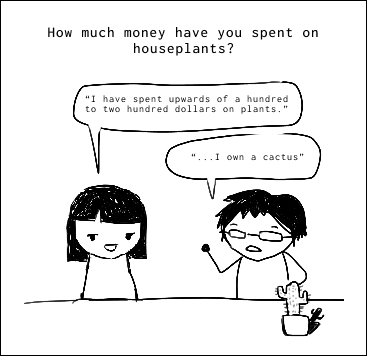
03
Learning to be a plant parent
Parenting is hard, plant parenting is not. We found that the most common cause of death for houseplants are usually simple mistakes like over/underwatering. For busy younger adults it is often difficult to find time between work and play to tend to their plants. Even a simple cactus can dry out and die if it is not watered properly. The next most common cause of death are pests. When we buy a new houseplant, it may carry harmful pests like spider mites or thrips that will spread to other plants if they are not caught in time. Quarantining new plants and preventative measures like baths and soap sprays are small but important steps in plant parenting that many new parents are unaware of.
Additionally, stores name the plants they sell generic names like “succulent” or “assorted tropical plant” which doesn’t give any information for new plant owners. Unless they recognize the plant, they also have no way of looking up information because they don’t have the name.
Many apps in the market have notification settings to remind the user about watering their plants, but we wanted to take this a step further and include a plant “encyclopedia” to help teach young plant parents how to actually care for their plant.
The general process would look something like:
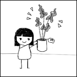
Amanda brings home a new “Assorted Tropical Plant”, she is excited to watch it thrive.
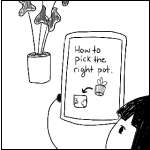
She reads an article on Captain Plants about drainage before repotting her new plant.
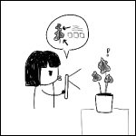
She scans her plant on the app to find out what it is. She uses the suggestions and community pictures to pinpoint the name of her plant.
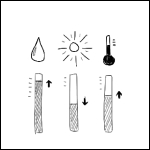
The app shows her the general water, light, humidity guidelines and an option to learn more about the plant.
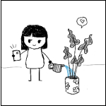
Every couple of days Amanda checks her plant and waters if the soil is dry. She logs her progress on the app.
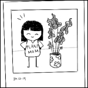
Amanda’s plant is happy and thriving, and so is she!
Marketing Strategy.
/01
Marketing Mix
Product
Captain Plants
- Gardening companion
- Social interaction with other plant enthusiasts (messaging, following, posting pictures)
- Care instructions, diagnosis and Q/A
- Buy/sell/trade marketplace for plants and products
- Location-based content (eg. if a user lives in a lower humidity environment, the app will remind the user to water more often)
- Plant identification
Price
Freemium Model
- Most key functions are free to use
- Premium account unlocks wider range of shopfront services such as statistics, promotion, etc.
- Removes ads
Subscription
- Support partnered plant content creators
- Subscription price split between us and the creator
Place
Apple App Store & Google Play Store
- Two largest distributors of apps for iOS and Android smartphones
- Includes support for in-app purchases and subscriptions
- Wide variety of developer resources to help with collection of reviews, feedbacks, and trend analysis
- Development is straightforward, app must be submitted for review before it can be published
- Google Play developer fee costs $25, while Apple charges an annual $99.
Promotion
“Be the Captain of your Life”
- Mission: spreading the healthy benefits of plants for our mental well-being
Connecting with Nature
- By taking the time to nurture our plants, we are also nurturing our mind
- Convey the message that owning indoor plants is proven to reduce psychological and physiological stress (Lee, Lee, Park, & Miyazaki, 2015).
- Giveaway of free baby plants in various university campuses
Digital media promotion
- Advertisements on major social media platforms
- Writing articles about mindfulness on popular blogs/magazines like “fineGardening”, “Garden Making”
- Creating our own social media accounts to track engagement and popularity
/02
Objectives
There is a strong relationship between the Canadian gardening industry and increasing mental health awareness, stress awareness, and healthy food options (Passport,2019). The current rise in popularity of urban agriculture in young adults contributes positively to the profitability of complementary products in the industry, such as accessories and most importantly, gardening apps.
We proposed three main marketing objectives for Captain Plants to ensure a successful launch into the app and gardening industries:
- Successfully launch in Canada and USA, and attain 100,000 total downloads by December 31st, 2021 with >275 average daily downloads in the first year
- 3-year media campaign to attract new customers
- Positive return on investment, positive cash flow by Year 2 to invest in future developments to expand our service offerings
Introductory Stage
- Discounted premium account
- Unlock perks when using features
- Free gifts for first users
- Survey with raffle prizes
Growing Stage
- Make adjustments to interface for better usability
- Make improvements based on user feedback
- Collaborate with brands and content creators
Maturity Stage
- Explore new geographical markets
- Explore new functionalities to introduce to the app
- Partnerships with other gardening or wellness brands
Design.
/01
Branding
Nature
Designed to stay connected with nature, we drew many inspirations from the green foliage around us.
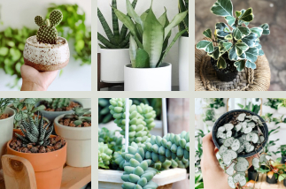

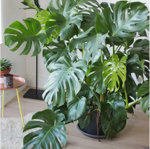
Logo
“Be the Captain of your Life”
Styleguide
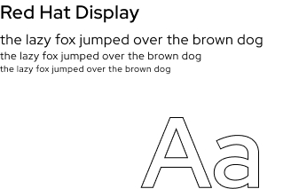
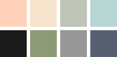
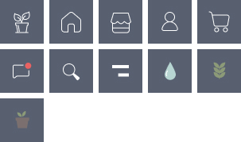
/02
User Flow
Before designing the wireframes, I started with a simple user flow chart to visualize how the users might navigate through our features.
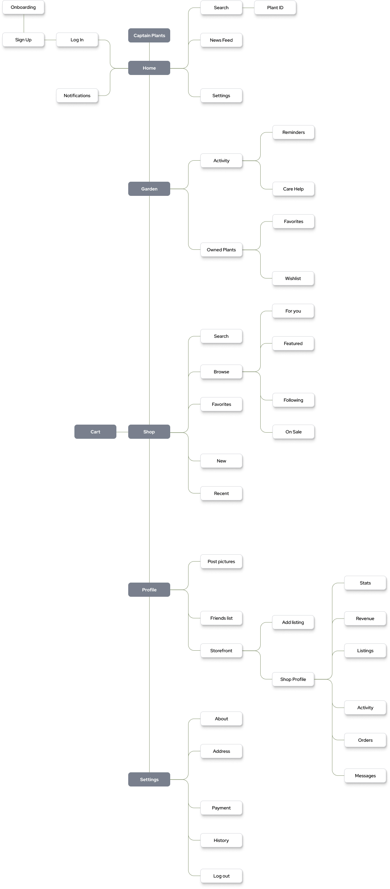Captain Plants
Finding little ways to reduce your stress and anxiety throughout the day will make you happier and will leave you feeling in control with your life.
Virtual Garden
Create a profile and upload houseplants into the app to create your own special virtual garden.
Can be used as a companion for your houseplant or to track a wish-list of plants you love.
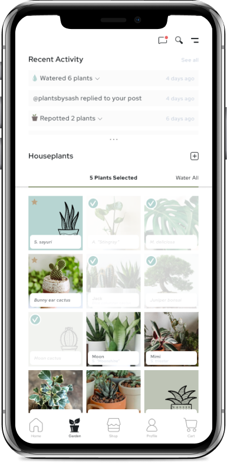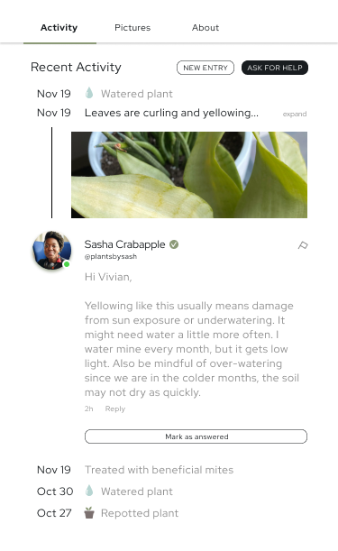
Detailed information and expert care tips to help your plant babies thrive.
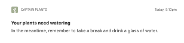
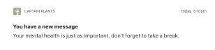
Customizable notifications to keep you updated on your plant care
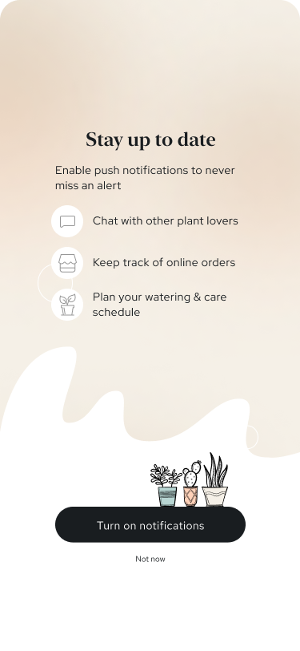Plant Search & ID
Search for specific plants or upload a photo to identify a plant.
Includes detailed information and care guidelines to teach you the ins and outs of your plant care.
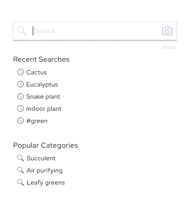
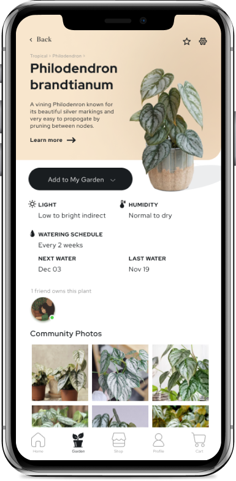
Information for each plant includes the top community uploaded photos.
Community Market
Join the community-run marketplace and support your local small plant stores!
There is a home for every plant enthusiast. Post your pictures, sell your plants and plant products, or follow your favorite plant friends.
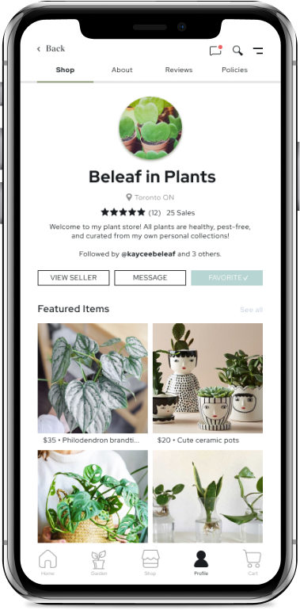
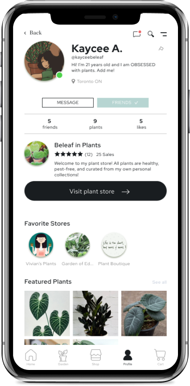
Reflections.
Areas of improvement
I think if I could improve my research methods, I would involve more collaboration with users earlier into the creation of our conceptual app to seek their opinion on the different features. We conducted mostly observational research as we listened and observed the way people interact with their houseplants. While this helped us understand the market and motivations, we didn't collect any user evaluations of our app concept. This would let us take our designs a step further and center it around the user, which, in practicality, would be more important than any statistic we could've found on a publication.
Final thoughts
I really enjoyed working collaboratively with my classmates and listening to the different backgrounds and experiences each of them brought to the table. We began with a deceptively simple problem, generated ideas through brainstorming, refined our problem and solution through research of the market and consumers, and built prototypes that can be used for further testing. We sought to understand why people are motivated by houseplants and I think at the end of this project, we all learned a lot about the issues they are facing and the many positive health benefits of this industry they are part of.
Get in Touch.

Toronto, Canada
Designed by me with coffee and ♥. Under construction. © 2022